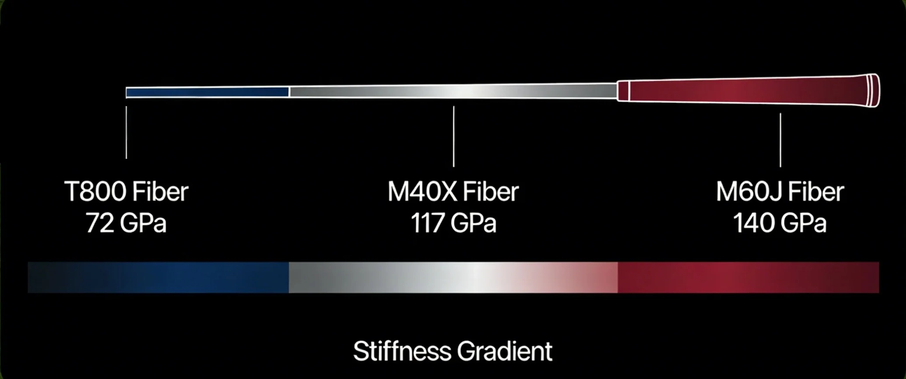

Introductie: De Materiaal Revolutie van Ruimte naar Golfbaan
In de brandstoftanks van Ariane-raketten en de monocoque structuren van F1-auto's wordt materiaalwetenschap toegepast die nu ook de precisiesport golf transformeert. UnigDesige brengt meer dan 20 jaar ervaring met koolstofvezel composieten uit de ruimtevaart- en auto-industrie in elke golfschacht. Dit is geen eenvoudige materiaalvervanging, maar een nieuwe uitdrukking van systeemdenken in sportuitrusting.
Multi-axiale Koolstofvezel Weeftechnologie
Traditionele schachten gebruiken vaak unidirectionele koolstofvezel arrangementen. UnigDesige past 7-assige weeftechnologie toe, geïnspireerd door satelliet zonnepaneel steunstructuren:
- 0° vezelrichting: Biedt axiale stijfheid voor optimale energieoverdracht
- ±45° vezelrichting: Verhoogt torsieweerstand, verbetert slagstabiliteit
- 90° vezelrichting: Voorkomt radiale vervorming, behoudt schacht rondheid
Intelligent Gradient Stijfheid Design: Bionische Engineering
De natuur bereikt efficiëntiemaximalisatie via gradient materiaal distributie. UnigDesige past dit principe toe in schachtdesign:

Afbeelding 1: Intelligent gradient stijfheid design - Progressieve distributie van verschillende modulus koolstofvezels in voor-, midden- en achtergedeelte
Drie-zones Stijfheid Optimalisatie
- Voorgedeelte (grip tot midden): T800 koolstofvezel, 72GPa modulus, biedt duidelijke gevoelsfeedback, helpt speler clubhoofdpositie te voelen
- Middegedeelte (kern buigzone): M40X koolstofvezel, 117GPa modulus, zorgt voor stabiele buiging, vermindert swingbaan afwijkingen
- Achtergedeelte (nabij clubhoofd): M60J koolstofvezel, 140GPa modulus, maximaliseert energieopslag en -afgifte efficiëntie
Precisie Torsie Controle: 2.6° Competitief Voordeel
Schaftorsie is een kritieke parameter die de clubface correctie snelheid beïnvloedt. De UnigDesige Pro-serie controleert torsie binnen 2.6°-3.0°, een precisieniveau dat dicht bij ruimtevaartuig attitude controle componenten ligt:
- Precieze clubface controle: Vermindert clubface vervorming tijdens downswing, zorgt voor accurate uitlijning bij impact
- Snelle clubface correctie: Bevordert snellere clubface correctie, zelfs bij hoge swing snelheden
Prestatie Validatie: Data-gedreven Design Optimalisatie
Samenwerking met 5 Europese PGA Tour spelers leverde meer dan 5.000 slaggegevens op voor analyse:
| Prestatie Indicator | UnigDesige 1K Carbon Schacht | Traditionele Schacht | Verbetering |
|---|---|---|---|
| Gemiddelde slagafstand | +8-12 yards | Basislijn | +6.5% |
| Landingsspreiding (standaard deviatie) | ±4.2 yards | ±5.8 yards | -27.6% |
| Torsie Stabiliteit | 3.1°±0.2° | 3.4°±0.4° | +35% |
Conclusie: Hervorming van Prestatienormen
Ruimtevaart-kwaliteit koolstofvezel technologie brengt driedimensionale innovatie in golfschachten: preciezere materiaalcontrole, intelligentere structuurontwerpen, en stabielere prestatie-output. De engineering filosofie van UnigDesige stelt dat ware hoge prestaties niet draaien om extreme data, maar om voorspelbare, herhaalbare fysieke respons bij elke swing. Dit is niet alleen een overwinning voor materiaalwetenschap, maar perfecte toepassing van engineering denken in sportuitrusting.
Professionele Fitting Advies
Om technologische voordelen te maximaliseren, adviseren we professionele swing analyse voor schachtselectie:
- Swing snelheid test: Meet swing snelheid, attack angle, clubface angle met TrackMan of GCQuad
- Tempo evaluatie: Analyseer backswing naar downswing tijdratio, bepaal schachtstijfheid behoefte
- Veldtest: Test verschillende flex punt ontwerpen onder echte baancondities
Of u nu een competitieve professionele speler bent of een amateur die doorbraken zoekt, correct technisch begrip en professionele fitting zijn even belangrijk. De toekomst van koolstofvezel schacht technologie is niet alleen lichter, stijver, sterker, maar ook intelligenter, stabieler, consistenter.